Keret demo wall
JavaScript is off, so here are all 21 photos on a plain page. The interactive wall needs JavaScript.
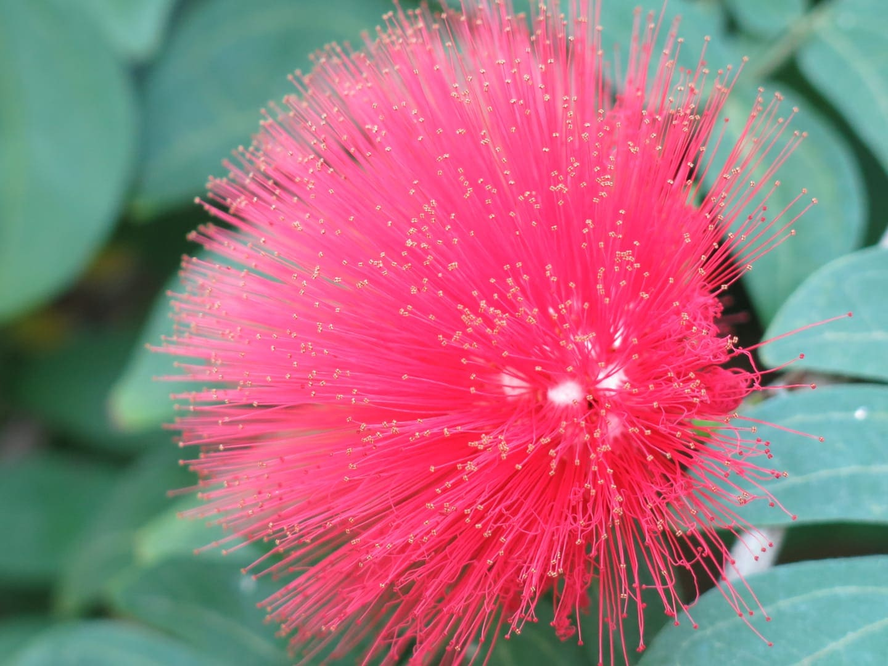
2017 - 30.5mm f/2.8 1/125s ISO 320 - Canon PowerShot G15
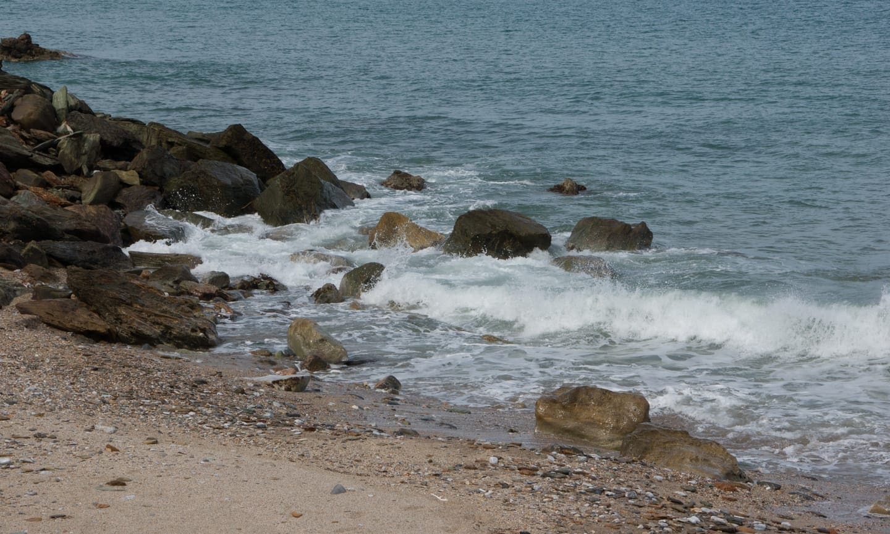
2015 - 75mm f/11 1/500s ISO 200 - SONY DSLR-A550
2013 - 30mm f/11 0.6s ISO 200 - SONY DSLR-A550
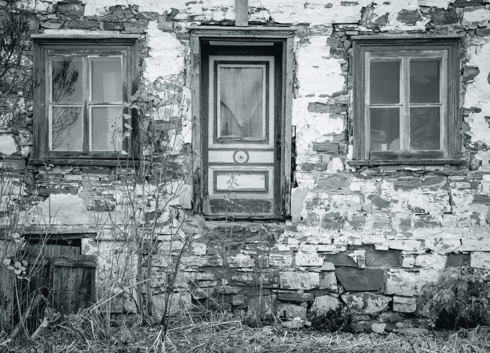
2022 - 100mm f/4.5 1/200s ISO 800 - NIKON CORPORATION NIKON Z 7_2
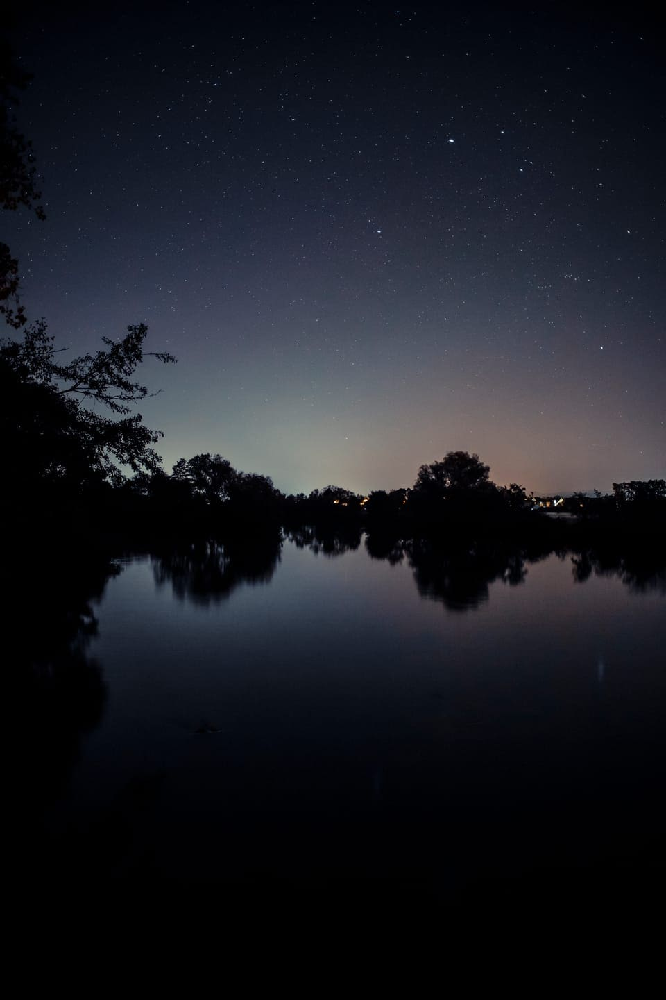
2018 - 28mm 8s ISO 1250 - Canon EOS 5D Mark III
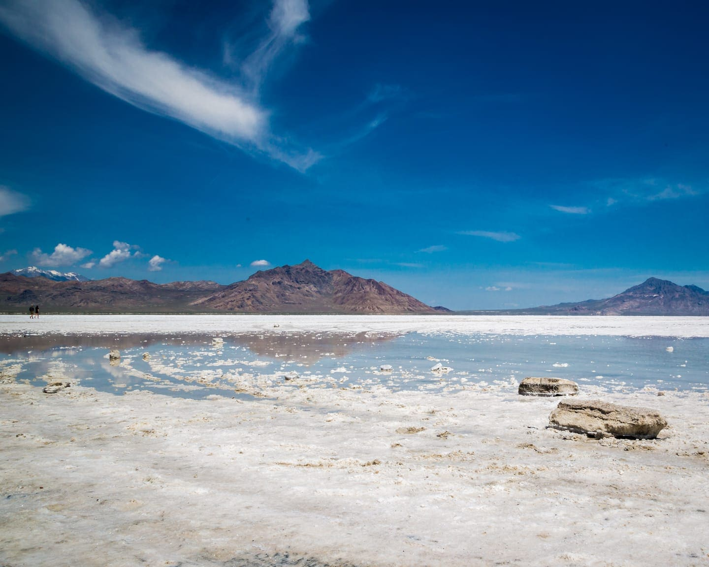
2016 - 24mm f/16 1/320s ISO 100 - Canon EOS 5D Mark III
2026 - 18mm f/5.6 1/250s ISO 180 - NIKON CORPORATION NIKON Z50_2
2014 - 18mm f/10 1/50s ISO 100 - NIKON CORPORATION NIKON D3300
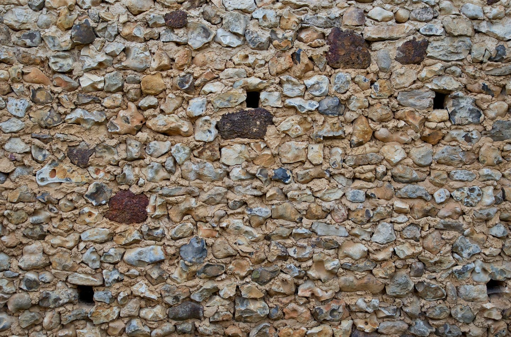
2011 - 30mm f/4 1/200s ISO 200 - SONY DSLR-A550
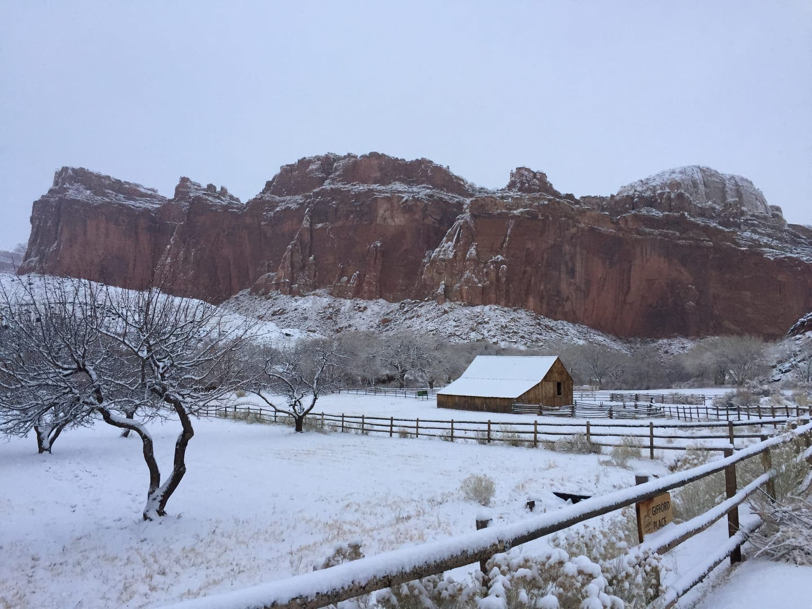
2018 - 4.2mm f/2.2 1/30s ISO 40 - Apple iPhone 6
2015 - 50mm f/7.1 1/1250s ISO 200 - Canon EOS 5D Mark III
2013 - 55mm f/8 1/250s ISO 200 - NIKON CORPORATION NIKON D50
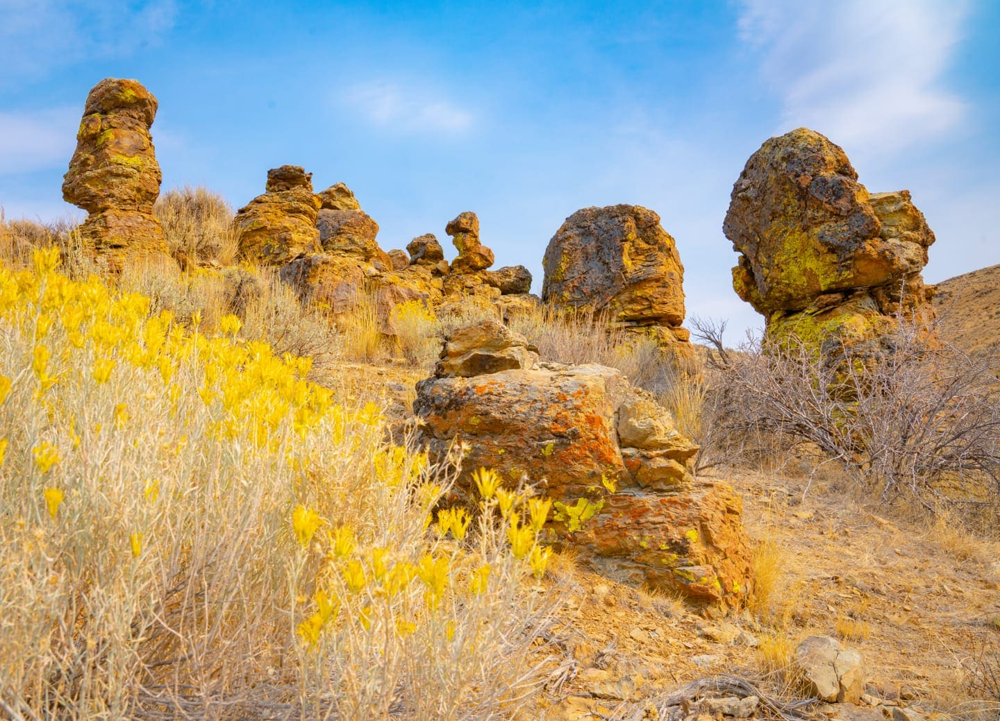
2021 - 24mm f/13 1/100s ISO 160 - SONY ILCE-7RM4
2024 - 5.7mm f/1.5 1/121s ISO 50 - Apple iPhone 14 Plus
2021 - 24mm f/22 1/20s ISO 50 - SONY ILCE-7RM4
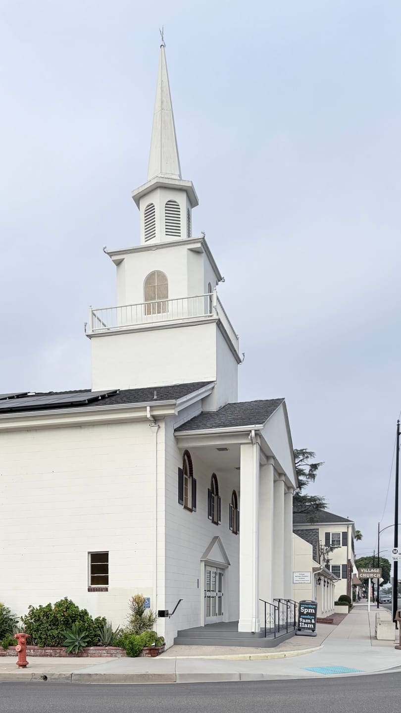
2026 - 6mm f/1.6 1/2283s ISO 50 - Apple iPhone 17
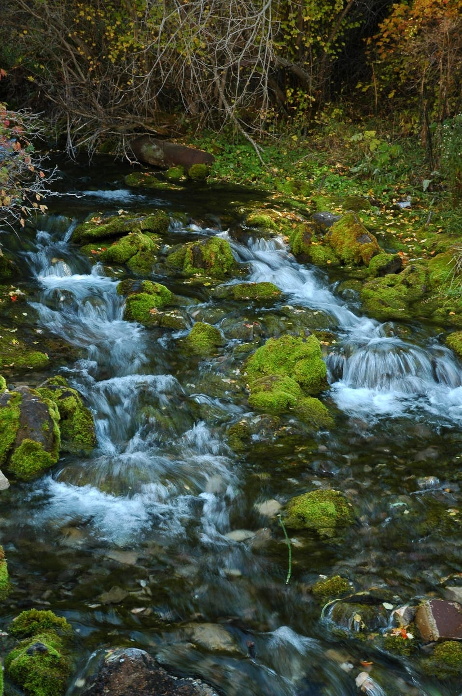
2007 - 46mm f/4.5 1/13s - NIKON CORPORATION NIKON D70s
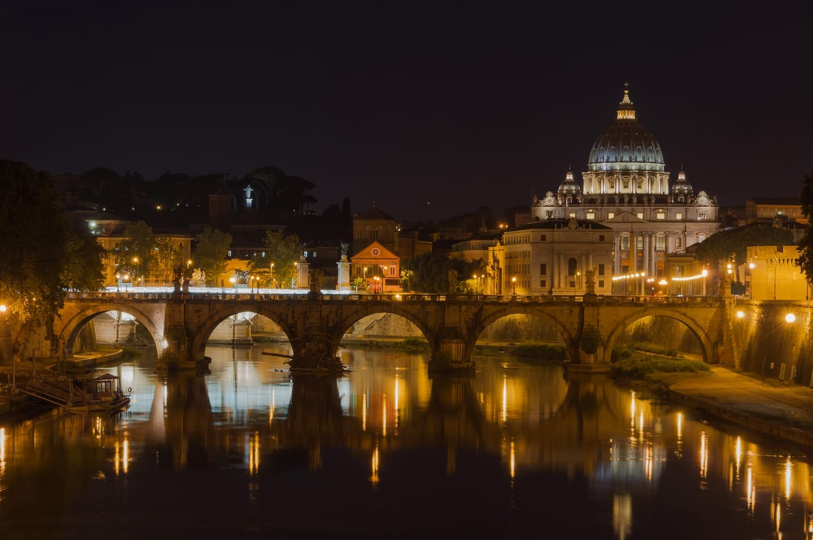
2013 - 60mm f/10 6s ISO 200 - SONY DSLR-A550
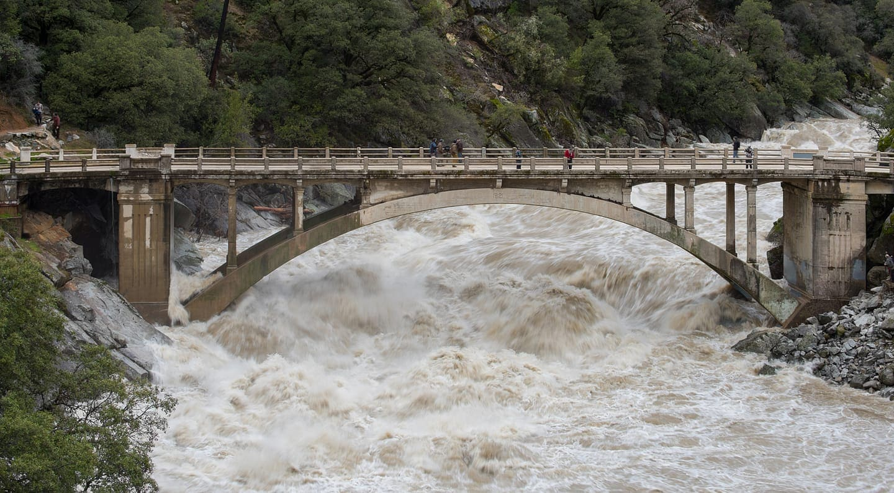
2017 - 70mm f/22 1/15s ISO 200 - NIKON D810
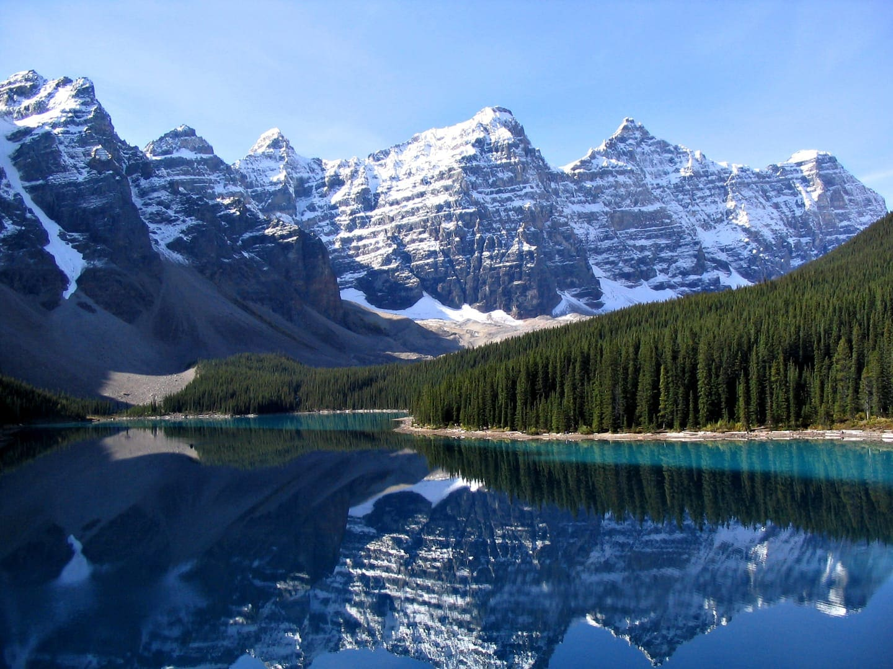
2005 - 5.4mm f/3.2 1/1000s - Canon PowerShot A70
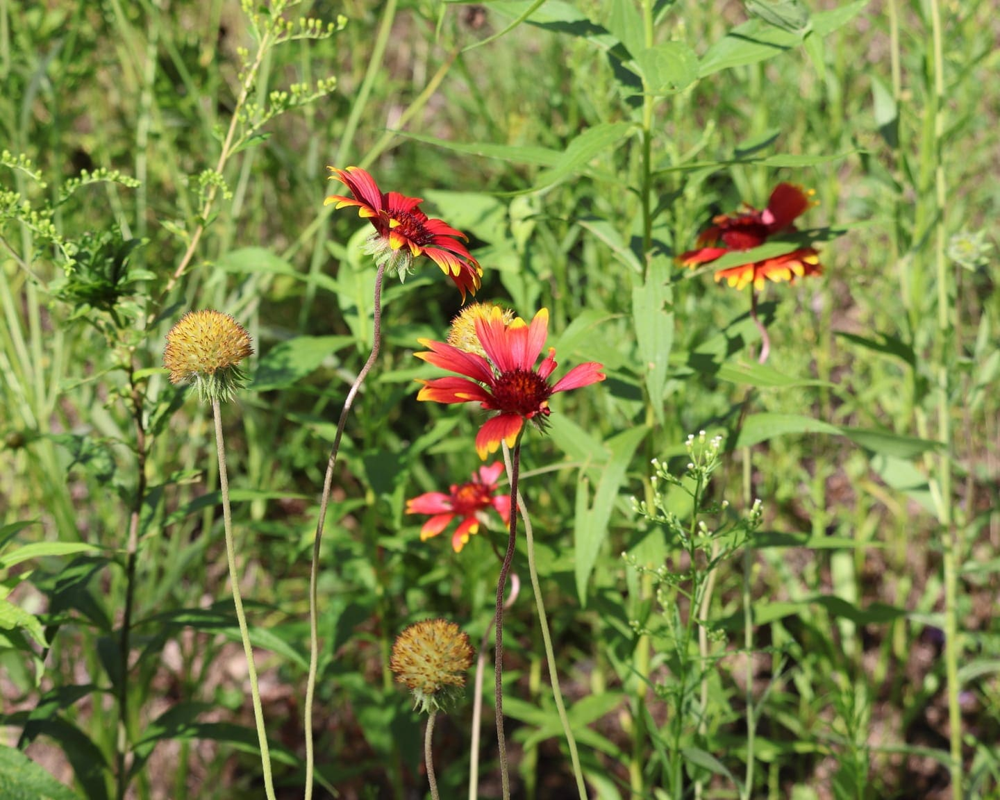
2026 - 55mm f/7.1 1/200s ISO 100 - Canon EOS R100